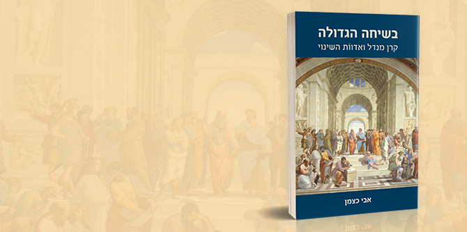

במבוא לספרו מתאר אבי כצמן את "בית הספר למנהיגות של ממלכת האינקה" – האתר הארכיאולוגי מאצ'ו פיצ'ו בפרו, אחד המתוירים ביותר בדרום אמריקה ומשבעת פלאי עולם. לשם, על-פי הסברה, נשלחו מדי שנה עשרות צעירות וצעירים מוכשרים, עסקו בלימוד שלל תחומי דעת ומיומנויות ויועדו להוות את שדרת המנהיגות של האימפריה. לאמור: כבר לפני למעלה משש מאות שנה הכירו בני האדם בחשיבותה של הכשרה למנהיגות.
ואולם, לא רב המשותף בין בית הספר האימפריאלי של האינקה ובין קרן ג'ק, ג'וזף ומורטון מנדל ותפיסת ההכשרה למנהיגות שלה – נושא ספרו של כצמן. הראשון אוטוריטרי ומיועד לבני האצולה בלבד, והשנייה – "פרי תרבות יהודית המחייבת מפגש ומחלוקת".
המסע של קרן ג'ק, ג'וזף ומורטון מנדל-ישראל מתחיל במפגש רב-עוצמה בין פרופ' סימור פוקס, בוגר ישיבה, מנהל-בפועל של הסמינר התיאולוגי היהודי בניו-יורק ובעל דוקטורט מאוניברסיטת שיקאגו, שהקדיש את חייו לחינוך היהודי, ובין מורטון ל' מנדל, בן למשפחת מהגרים יהודית מפולין שהתגוררה בקליבלנד – איש עסקים מחונן, פעיל ציבור ופילנתרופ רחב לב, בעל "יד מחבקת, מאור פנים, מבט תומך ומעודד [...] כוח זיכרון מופלא, צלול וערני גם בעשור העשירי לחייו [...] הוא יודע גם לכעוס, להביע נימה – שדי בה – של אי-שביעות רצון. איש קשוח עם הרבה נקודות רכות ונדיבות לאין קץ" (עמ' 24).
השניים, פוקס ומנדל, הסכימו: החינוך היהודי, הנתון במשבר תמידי, חייב להתמקצע, ולשם כך דרושות מחויבות והשקעה רבות: "להכשיר את בכירי העוסקים בחינוך היהודי בעולם וחוקריו, לפתח מנהיגות ציבורית ולהקים תוכנית שתקשר בין הקהילות לבתי הספר, לאוניברסיטאות ולשלל הפעילויות הלא-פורמליות – תנועות נוער ומרכזים קהילתיים, ביקורים בישראל ומחנות קיץ" (עמ' 356). אליהם חברה גם אנט הוכשטיין – כיועצת, מתכננת ומנהלת, ולה מוקדש הפרק הראשון בספר.
העיקרון שמאחורי כל מפעלות מנדל: המפגש בין הרעיונות הגדולים, האנשים הגדולים והספרים הגדולים – מצד התאוריה, ובין "המציאות הממשית, הסבוכה והחורקת.. המשמעות המכרעת של המפגש בין אלה לבין זו – המפגש החי, האנושי, עיניים ואוזניים, פה ואף, עם דמויות ומפות ודגמים ועמודים מודפסים על נייר או מוקרנים על צג מכאן ועם השטח על הזיעה והאבק, הפקקים והאילוצים, הרעש והסירחון שבו – מכאן" (עמ' 15-14). ולא רק זאת, אלא גם הבחירה באנשים מצוינים והצבתם בתפקידי מפתח – "הסוד טמון באנשים". רק כך היה העסק לחלקי חילוף למכוניות שרכשו האחים מנדל ב-1940 בתשע מאות דולר – בתוך חמישה עשורים – לתאגיד עצום, ומרווחיו השקיעו האחים מנדל בקרן שהייתה לאחת מקרנות החינוך היהודי הגדולות בעולם.
כצמן, חבר סגל קרן מנדל-ישראל, מבקר תרבות, עיתונאי ועורך, לימד במוסדות להשכלה גבוהה ברחבי הארץ וערך ספרי עיון רבים, בהם סדרת הספרים "מראי מקום", העוסקת בחינוך ובזהות יהודית וישראלית, פרי שיתוף פעולה בין קרן מנדל לכתר ספרים. ספרו מבקש לחקור את השפעת הקרן באמצעות סיפוריהם של בוגרים נבחרים. לשם כך קיים תשעה-עשר ראיונות, עם כמה מהאישים הבולטים המעורבים בייסוד הקרן ועם כמה מבוגרי שתי תוכניות המלגה העיקריות שלה – תוכנית עמיתי ירושלים, שיועדה לאנשי חינוך ולמנהיגי קהילות מכל זרמי היהדות, החלה לפעול כבר ב-1982, שולבה במסגרת תוכניות קרן מנדל-ישראל (שהוקמה ב-1990) וחדלה להתקיים ב-2011, ובית ספר מנדל למנהיגות חינוכית – תוכנית שהחלה לפעול בתחילת שנות התשעים ונמצאת בעיצומו של המחזור העשרים ותשעה, וייעודה להכשיר את מנהיגי העתיד של שדה החינוך בישראל. לשתי התוכניות גויסו עמיתים בעלי ניסיון מקצועי וניהולי משמעותי, במטרה לשפר את יכולותיהם בדרכם להיות מנהיגים אפקטיביים.
הספר מחולק לפרקים – סיפוריהם האישיים של כמה מאנשי מנדל, המקדישים את חייהם לנושא מורכב זה של חינוך בכלל וחינוך יהודי בפרט – ומחוללים שינוי. כל אחד מהסיפורים פורס את הביוגרפיה האישית ואת מסעו של מנהיג יוצא דופן, חושף את אישיותו הכריזמטית ומסייע להבין באופן מעמיק את ההשפעה העזה שהייתה לכל אחד מהם על החשיבה הפדגוגית והאינטלקטואלית בחברה הישראלית ובעולם היהודי. לדברי כצמן,"מורט מנדל ושאיפתו לחולל שינוי בעולם הם המנוע המתוחכם מאחורי הסיפורים" המסופרים בספר זה, המספק הצצה לאופן שבו מיתרגמים העקרונות המנדליים ועקרונות החינוך היהודי על-פי מנדל לאדוות של שינוי.
אחד מפרקי הספר הוא סיפורה של גילה בן-הר, מבוגרות מחזור א' של בית ספר מנדל למנהיגות חינוכית, ראשת מינהל החינוך בעיריית תל אביב ומנכ"לית המרכז לטכנולוגיה חינוכית לשעבר, וכיום הממונה על חדשנות, פדגוגיה ולמידה דיגיטלית בקרן מנדל-ישראל. בעבורה, "המפתח העיקרי לגילוי עולמות חדשים, כיוונים ומסלולים ונתיבים לא-נודעו הוא יחסי אנוש. זה סוד הצטיינותה כמנהלת" (עמ' 158). בן-הר – בת לניצול שואה מפולין ואחות שכולה – מן הנשים המשפיעות בישראל, שהצעידה את הארגון שניהלה להישגים מפליגים, "חולשת על ספינת אוצרות – המתחזה לבניין משרדים המעוצב להפליא – של חזית הידע, חדשנות ועתידנות; היא עוסקת ביצירתיות, בחיזוי מגמות ובפיתוחן ובעצם – בעיצוב פני החברה הישראלית באמצעות ההשפעה הרבה שיש למטח על הכלים והתכנים המשמשים את מערכת החינוך" (עמ' 158).
פרק אחר מביא את סיפורו של ראובן שטרנשטיין, בוגר מחזור כ"ב של תוכנית עמיתי ירושלים ורבה של הקהילה היהודית בסאו פאולו בברזיל – הקהילה הגדולה באמריקה הלטינית ואחת הגדולות בעולם כולו. שטרנשטיין מתמקד בשאלת יסוד של העולם היהודי בדורנו, ואולי לא רק: "איך אפשר להפוך את 'העניין היהודי' מנוסטלגיה דקורטיבית ומידלדלת לפילוסופיה יומיומית המדריכה את החיים בפועל, איך לתרגם את המקורות היהודיים לשפה פשוטה אך מעוררת השראה, כדי להנגיש את היהדות ליהודים" (עמ' 55).
שטרנשטין מספר: "השילוב בין העולמות האלה... הוא שילוב אינטנסיבי, מורכב ומוצלח בין פילוסופיה לפסיכולוגיה, לחינוך ולעסקים – משם גם נובעת השפה המנדלית. הדיאלוג בין הדיסציפלינות. זה פותח אותך. כל אחד מביא משהו מהבועה שלו וגורם גם לבועה שלך להיראות אחרת" (עמ' 59).
הראיונות כולם שזורים זה בזה, מלאכת מחשבת, בשפתו הייחודית של כצמן – האנליטית, האירונית, הפיוטית לפרקים.
כצמן מסכם: "הכל חינוך. לכך התכוונו הן נביאי ישראל הן הפילוסופים היוונים הן ממשיכיהם הגדולים. איש איש במילותיו ובדימוייו שלו. החינוך, בשורה התחתונה, מניע שינוי. חתירה לשינוי היא הלב הפועם במכון מנדל למנהיגות, בבית ספר מנדל למנהיגות חינוכית ובמרכזי מנדל למנהיגות בצפון ובדרום. ונכון, שינוי הוא לפעמים נגיעה קלה שהשפעתה עצומה". (עמ' 361).
בשיחה הגדולה – קרן מנדל ואדוות השינוי
מאת אבי כצמן, בהוצאת קרן ג'ק, ג'וזף ומורטון מנדל והוצאת והוצאת מאגנס (390 עמודים).
{kind=link}